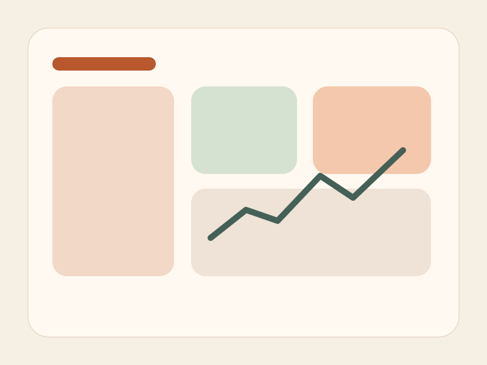
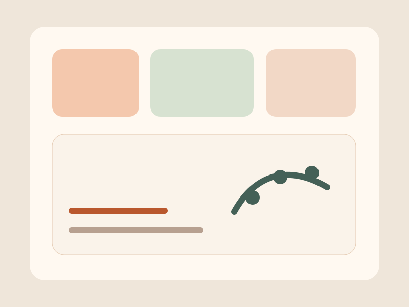
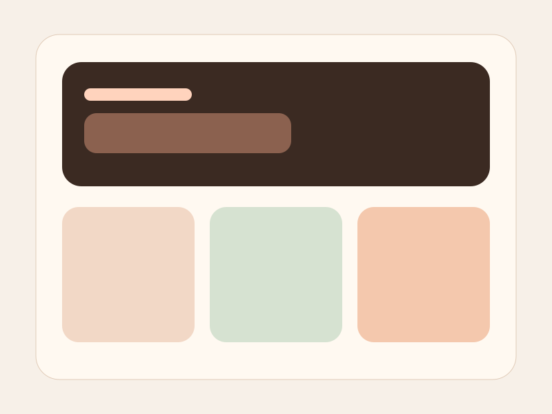
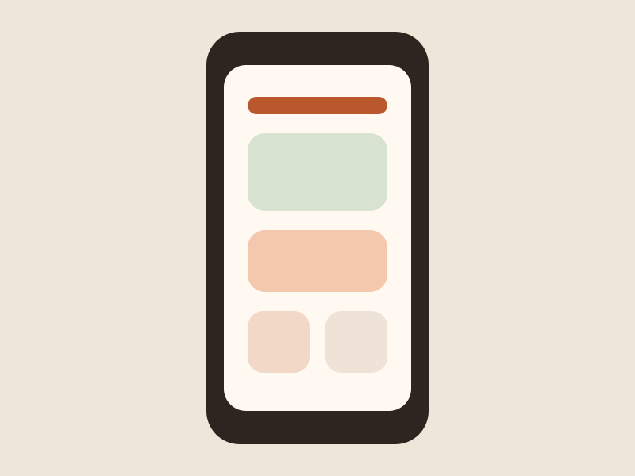
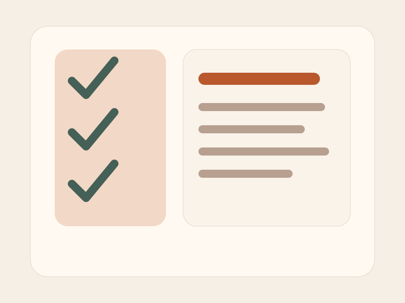
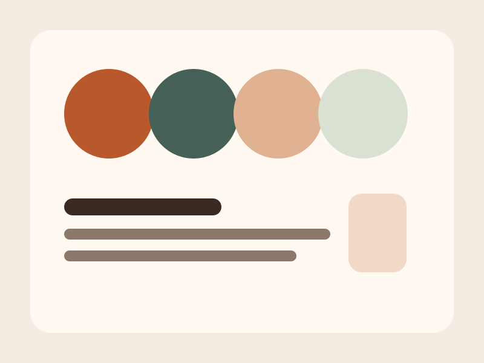

UI Design + Web Build
Community Dashboard
A responsive admin interface for volunteers to monitor events, attendance, and outreach tasks.
Showing all 6 projects.
Custom JavaScript enhancement: reviewers can test both filtering and view switching on this page.

UI Design + Web Build
A responsive admin interface for volunteers to monitor events, attendance, and outreach tasks.

Research
A synthesis project focused on course friction points, motivation, and support opportunities.

Web Build
This project itself demonstrates semantic HTML, Bootstrap components, and custom responsive styling.

UI Design
An interface concept prioritizing glanceable balances, clear actions, and thumb-friendly controls.

Web Build + Research
A review process that improved focus states, heading order, alt text quality, and color contrast.

UI Design + Research
An exploration of visual tone, typography, and color choices for a human-centered portfolio identity.